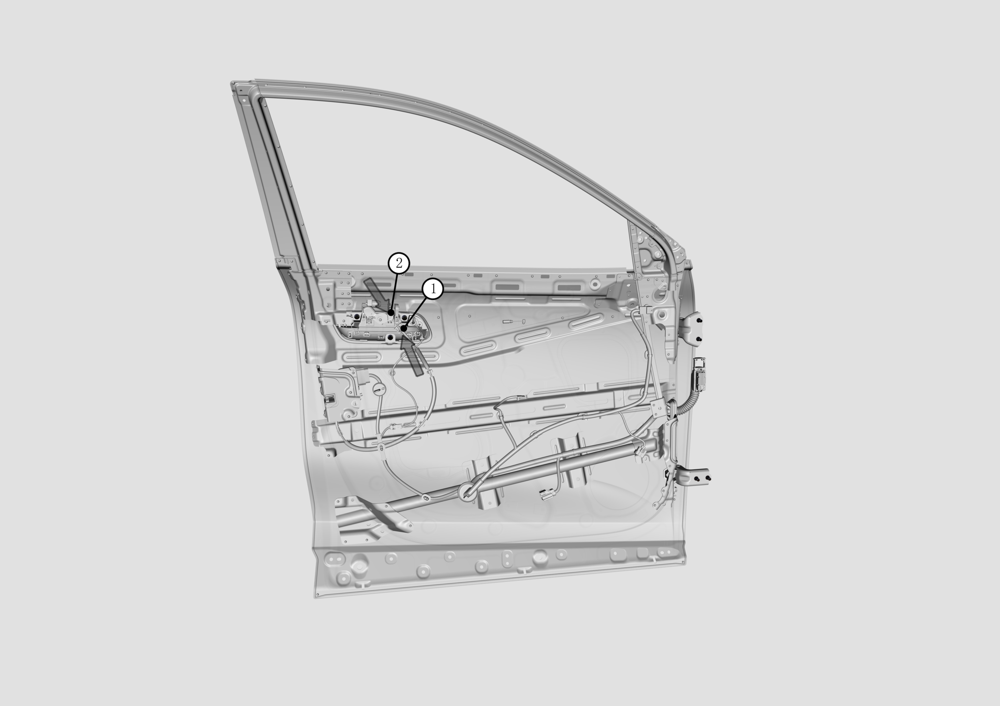
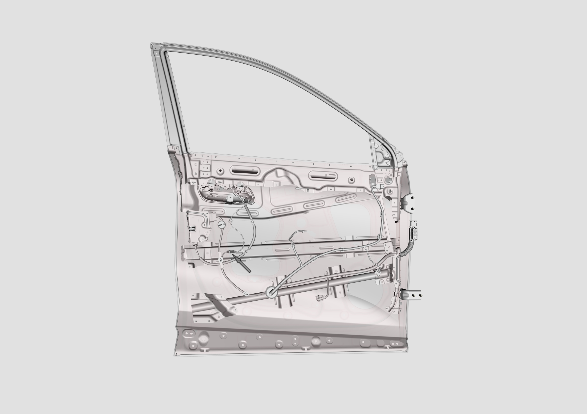

拆卸和安装前门外开拉手
拆卸
注意
这里介绍的是驾驶员侧车门外开拉手的拆卸和安装，其它三门外开拉手的拆卸和安装相同。
1.将前门玻璃升到顶
2.拆卸前车门内饰板，参见 拆卸与安装前门内饰板
3. 取下外开拉索
将门锁的外开拉索按1、2依次从把手上取下，“箭头”指示处。

4. 取下箭头指示处的线束接插件

5. 取下外开手柄
将把手背后三颗螺丝拧松，便可取下把手，三颗螺丝位置，“箭头”指示处。

6、安装外开手柄
更换新的外开手柄，安装时检查并调整外开手柄与车门外板间隙面差，然后将手柄背后三颗螺丝按7N*m的扭矩拧紧，三颗螺丝位置及安装顺序如下图“箭头”指示处。